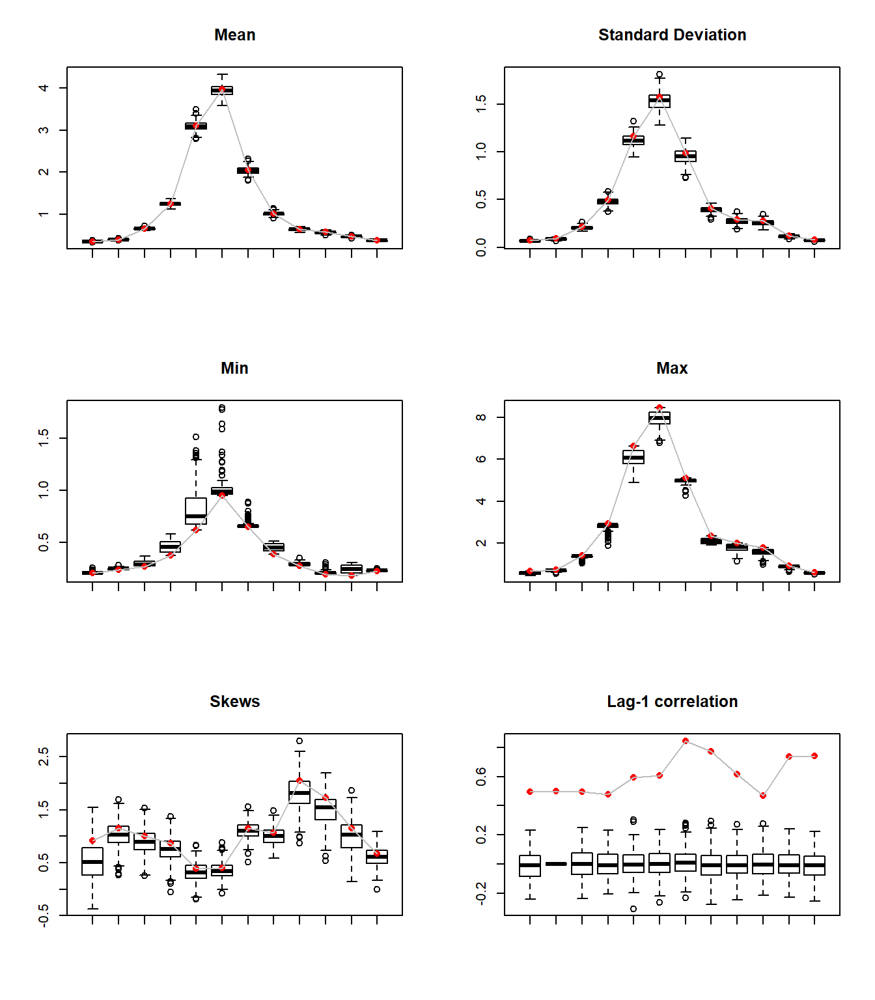
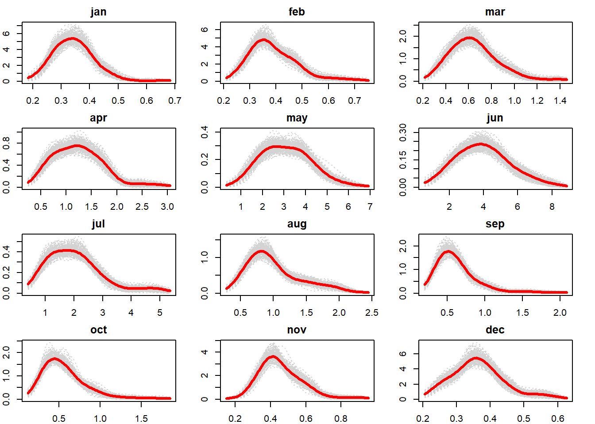
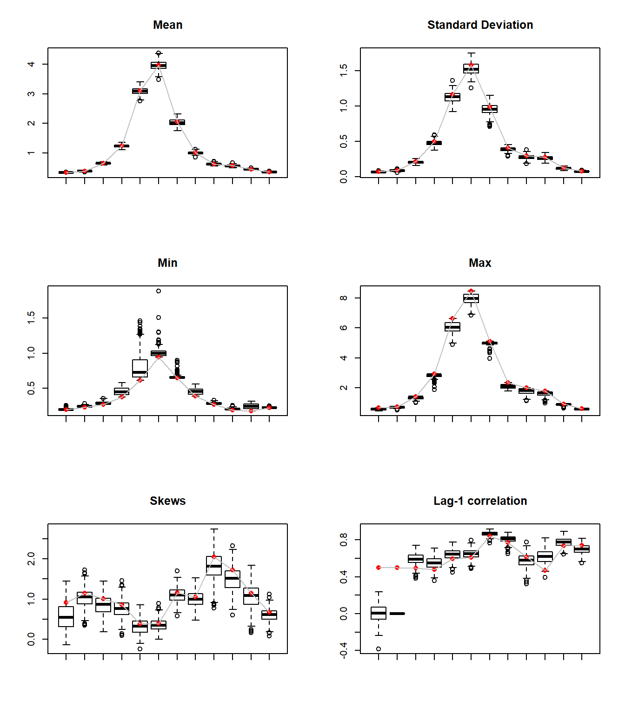

Exercise 3 Multivariate Simulation - Copulas
Another approach to simulating the monthly streamflow is using Copulas. Fit appropriate marginal PDFs for each monthly streamflow
3.0.1 Data import and setup
# Load libraries
libr=c("magrittr","sm","MASS","ks","copula","moments")
options(warn=1)
suppressPackageStartupMessages(lapply(libr, require, character.only = TRUE))# import and set up flow data
flow = read.table(
"http://civil.colorado.edu/~balajir/CVEN6833/HWs/HW-3-2018/LeesFerry-monflows-1906-2016.txt")
flow = flow[,2:13] %>% `rownames<-`(flow[,1]) %>%
setNames(.,c("jan","feb","mar","apr","may","jun",
"jul","aug","sep","oct","nov","dec")) %>%
{./10^6} # convert AF to MAF
head(flow,n=1L) # show values## jan feb mar apr may jun jul aug
## 1906 0.244314 0.292534 0.678174 1.20464 3.635101 5.014167 2.95046 1.605086
## sep oct nov dec
## 1906 1.503159 0.739807 0.503006 0.353312tail(flow,n=1L)## jan feb mar apr may jun jul
## 2016 0.360703 0.448837 0.67914 1.099567 2.967581 3.910287 1.342044
## aug sep oct nov dec
## 2016 0.609946 0.485507 0.546633 0.426289 0.3451633.1 Fit a Copula to the joint CDF (copula by pairs)
As a first approach, we will use copula by pairwise comparison (lag-1 model).
# Function to fit copula estimator for a pair of time series
fit2copula = function(data1,data2){
u = pobs(cbind(data1,data2))
fc=normalCopula(dim=2,disp='un')
fnc = fitCopula(fc,u)
return(fnc)
}
# Function to generate simulated values from fitted copula
sim.copula = function(fnc,data2,N){
cop.sim = rCopula(N,normalCopula(fnc,dim=2,dispstr='un'))
data.sim = quantile(data2,cop.sim[,2])
# quan.sim = qkde(cop.sim[,2],fhat)
return(data.sim) # return(quan.sim)
}3.2 Simulate from the Copula and invert
# Simulation paramenters
nsim=250
N=length(flow[,1]) # years
armean=matrix(0,nsim,12) #matrices to store the statistics
arstdev=matrix(0,nsim,12)
arcor=matrix(0,nsim,12)
arskw=matrix(0,nsim,12)
armax=matrix(0,nsim,12)
armin=matrix(0,nsim,12)
xeval = matrix(0,nrow = 100,ncol = 12) # Points where the PDF is evaluated
for(i in 1:12){
xeval[,i]=seq(min(flow[,i])-0.25*sd(flow[,i]),
max(flow[,i])+0.25*sd(flow[,i]),length=100)
}
simpdf = array(0,c(100,12,nsim)) # Array to store simulated PDF
xsim = array(0,c(N,12,nsim)) # Array to store simulated val
# Simulation initialization parameters
ncop = 12 # generate pairs of data to use in copula
data1 = data2 = array(NA,c(N,1,ncop)) # data 1 / 2: prev / current month
fnc = 1:ncop # fitted normal copulas for every pair
for(icop in 1:ncop){
if(icop==1){
data1[-N,1,icop] = flow$dec[-N] # dec of previous year
data2[-N,1,icop] = flow$jan[2:N] # jan of next year
fnc[icop] = fit2copula(data1[-N,,icop],data2[-N,,icop])@estimate
}else{
data1[,1,icop] = flow[,icop-1] # as given
data2[,1,icop] = flow[,icop] # as given
fnc[icop] = fit2copula(data1[,,icop],data2[,,icop])@estimate
}
}
for(isim in 1:nsim){ # simulation loop
for(j in 1:12){ # get each month as copula with previous month
if(j==1){ # dec-jan copula
xsim[,j,isim]=sim.copula(fnc[j],data2[-N,,j],N) # remove NA year 111
}else{
xsim[,j,isim]=sim.copula(fnc[j],data2[,,j],N) # simulated values
}
simpdf[,j,isim]=sm.density(xsim[,j,isim], # simulated PDF
eval.points=xeval[,j],display="none")$estimate
# fill statistics
armean[isim,j]=mean(xsim[,j,isim])
armax[isim,j]=max(xsim[,j,isim])
armin[isim,j]=min(xsim[,j,isim])
arstdev[isim,j]=sd(xsim[,j,isim])
arskw[isim,j]=skewness(xsim[,j,isim])
if(j>2)arcor[isim,j]=cor(xsim[,j,isim],xsim[,j-1,isim])
}
arcor[isim,1]=cor(xsim[-N,12,isim],xsim[2:N,1,isim])
# print(isim)
}We now add the statistics from the original dataset and bind it with the simulation st.
# Compute statistics from the historical data.
obsmean=1:12
obsstdev=1:12
obscor=1:12
obsskw=1:12
obsmax=1:12
obsmin=1:12
for(i in 1:12){
obsmax[i]=max(flow[,i])
obsmin[i]=min(flow[,i])
obsmean[i]=mean(flow[,i])
obsstdev[i]=sd(flow[,i])
obsskw[i]=skewness(flow[,i])
}
obscor[1]= cor(flow[-N,12], flow[2:N,1])
for(i in 2:12){
obscor[i]=cor(flow[,i], flow[,i-1])
}
# bind the stats of the historic data at the top..
armean=rbind(obsmean,armean)
arstdev=rbind(obsstdev,arstdev)
arskw=rbind(obsskw,arskw)
arcor=rbind(obscor,arcor)
armax=rbind(obsmax,armax)
armin=rbind(obsmin,armin)3.3 Boxplot the statistics listed in problem 1 and compare with the results from the previous methods
We repeat the code from problem 1 to do so.
# function to plot boxplots with the structure: hist. in first row
plot.bp = function(matrix,name){
xmeans=as.matrix(matrix)
n=length(xmeans[,1])
xmeans1=as.matrix(xmeans[2:n,]) #the first row is the original data
xs=1:12
zz=boxplot(split(xmeans1,col(xmeans1)), plot=F, cex=1.0)
zz$names=rep("",length(zz$names))
z1=bxp(zz,ylim=range(xmeans),xlab="",ylab="",cex=1.00)
points(z1,xmeans[1,],pch=16, col="red")
lines(z1,xmeans[1,],pch=16, col="gray")
title(main=name)
}par(mfrow=c(3,2))
plot.bp(armean,"Mean")
plot.bp(arstdev,"Standard Deviation")
plot.bp(armin,"Min")
plot.bp(armax,"Max")
plot.bp(arskw,"Skews")
plot.bp(arcor,"Lag-1 correlation")
As observed, mean, st.dev, max and skews are well fit. Min values are overestimated, and lag-1 is not captured. In general, the statics are better than the ones using autoregressive models.
xdensityorig = matrix (0,nrow = 100,ncol = 12) #initialize original PDF
for(j in 1:12){ # obtain original PDF
xdensityorig[,j] = flow[,j] %>% sm.density(.,eval.points=xeval[,j],display="none") %>%
.$estimate
}
plot.pdf = function(eval,histPDF,simPDF,title){
xeval = eval
plot(xeval,histPDF,pch=".",col="red",ylim=range(simPDF,histPDF),
xlab="",ylab = "")
for(i in 1:nsim)lines(xeval,simPDF[,i],col='lightgrey',lty=3)
lines(xeval,histPDF,lwd=3,col="red")
title(main=title)
}par(mfrow=c(4,3))
par(mar=c(2,2,2,2))
for(j in 1:12){
plot.pdf(xeval[,j],xdensityorig[,j],simpdf[,j,],colnames(flow[j]))
}
The simulated PDF do not respond to a probabilistic distribution, sitting closely around the empirical PDF.
The result is more precise that the one using autoregressive models.
3.4 12 months copula
Now we will use the full copula between all months.
u = pobs(flow) # convert to pseudo-observations
fc12=normalCopula(dim=12,disp='un') # normal copula (66)
fnc12 = fitCopula(fc12,u) # estimate from copula
dat_sim = array(0,c(N,12,nsim))
cop_pdf = array(0,c(100,12,nsim))
carmean=matrix(0,nsim,12) #matrices to store the statistics
carstdev=matrix(0,nsim,12)
carcor=matrix(0,nsim,12)
carskw=matrix(0,nsim,12)
carmax=matrix(0,nsim,12)
carmin=matrix(0,nsim,12)
for(isim in 1:nsim){
cop_sim = rCopula(N,normalCopula(fnc12@estimate,dim=12,dispstr='un'))
for(j in 1:12){
dat_sim[,j,isim] = quantile(flow[,j],cop_sim[,j])
cop_pdf[,j,isim]=sm.density(dat_sim[,j,isim], # simulated PDF
eval.points=xeval[,j],display="none")$estimate
# fill statistics
carmean[isim,j]=mean(dat_sim[,j,isim])
carmax[isim,j]=max(dat_sim[,j,isim])
carmin[isim,j]=min(dat_sim[,j,isim])
carstdev[isim,j]=sd(dat_sim[,j,isim])
carskw[isim,j]=skewness(dat_sim[,j,isim])
if(j>2)carcor[isim,j]=cor(dat_sim[,j,isim],dat_sim[,j-1,isim])
}
carcor[isim,1]=cor(dat_sim[-N,12,isim],dat_sim[2:N,1,isim])
# print(isim)
}# bind the stats of the historic data at the top..
carmean=rbind(obsmean,carmean)
carstdev=rbind(obsstdev,carstdev)
carskw=rbind(obsskw,carskw)
carcor=rbind(obscor,carcor)
carmax=rbind(obsmax,carmax)
carmin=rbind(obsmin,carmin)par(mfrow=c(3,2))
plot.bp(carmean,"Mean")
plot.bp(carstdev,"Standard Deviation")
plot.bp(carmin,"Min")
plot.bp(carmax,"Max")
plot.bp(carskw,"Skews")
plot.bp(carcor,"Lag-1 correlation")
The results are at least as good as the copula by pairs. Also, the lag-1 correlation is captured (with the exception of jan and feb).
par(mfrow=c(4,3))
par(mar=c(2,2,2,2))
for(j in 1:12){
plot.pdf(xeval[,j],xdensityorig[,j],cop_pdf[,j,],colnames(flow[j]))
}
The simulated PDF are also really close to the empirical PDF, being able to mimic the multimodal behavior of February, May, July, etc.